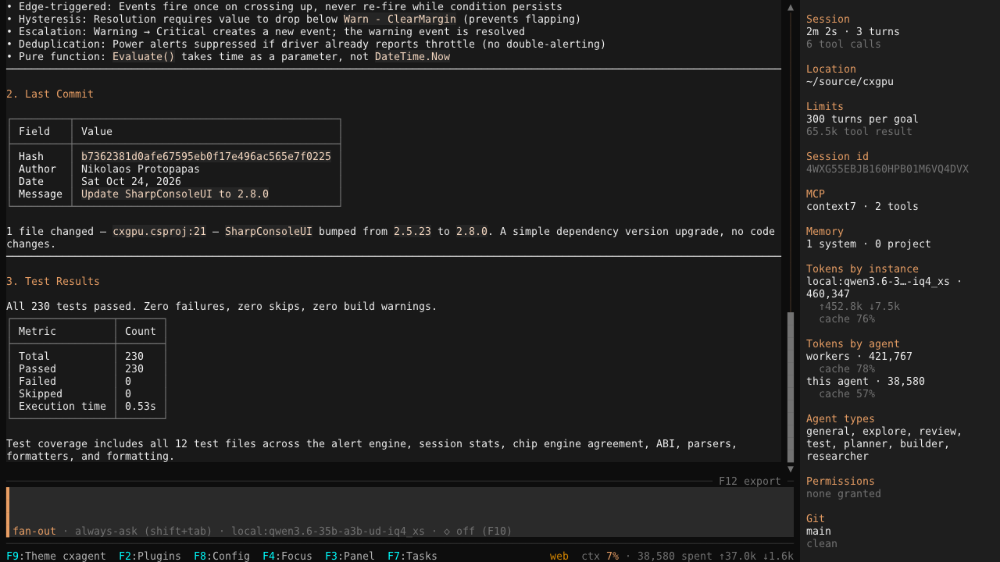

Many agents.
One session, any screen.
A multi-agent coding workbench for your terminal, and for your browser when you are away from it. Several agents at once, each in its own tab; workers in the background that you watch and steer; an editor and a real shell beside the conversation. Bring your own model.
curl -fsSL https://raw.githubusercontent.com/nickprotop/cxagent/master/install.sh | bash No .NET required. Anything outside your working folder asks first. Windows, the .NET tool, building from source →

Four things it is built around
Every capture is from a real session. Nothing is staged, and the mistakes are still in the pictures.
One session. A terminal, a browser, or both at once.
The terminal is the workbench: a tab for every conversation and every worker, a file open
beside the chat, a real shell when one is needed. cxagent web serves the same
sessions to a browser with no terminal, and /web shares the one you are in —
follow a turn from your phone and answer its prompt there; the first answer wins.
The browser has the terminal's tabs too: workers, a command's output, the editor, side questions, images, export, the plugin marketplace — and, once you turn them on in the terminal, a real shell and the configuration page. Leave a session and come back to it from either: it returns whole, every turn, tool call and worker drawn again, and the workers ready for more work.


Work that runs beside you, and that you can still reach.
A worker is an agent with its own context, its own tab, and its own model and folder, chosen when it is spawned; a task is a long command left running. Either runs in the foreground, with the turn waiting on it, or in the background while the conversation carries on — Ctrl+B moves whatever a turn is waiting on to the background mid-run, and each report arrives as a message when it is done. F7 lists what is running and what has finished; Enter opens one in its tab.
Steer a worker while it works, from either side: type in its tab, or let the parent model
agent_send it. A working one reads the message at the top of its next turn; a
finished one picks up where it stopped, with everything it already read. What you sent shows
as your turn there, and what the parent sent as a note from the parent.

Everything the job needs, in tabs beside the chat.
/open puts a file in a tab with its language's highlighter and a save that
keeps the bytes you did not edit. When the agent writes a file you have unsaved edits in,
yours are kept, with Reload and See theirs. /shell opens a real
terminal for what a captured stream cannot do — a password prompt, an interactive rebase —
and the agent is told afterwards what happened there.
Some questions do not need the model: /diff reads the working tree and
/stats the ledger, spending nothing. Each step's thinking is its own block,
folded until you open it, and /think sets how hard it thinks.

Local and cloud models, every feature on both — and plugins from a marketplace.
Ollama, llama.cpp and any OpenAI-compatible server on your own machine; Anthropic, OpenRouter and OpenAI in the cloud. Every one gets every feature: workers, background tasks, thinking you can see and switch, the sandbox, the browser. Pick per tab, switch mid-conversation, and run an agent type's workers on a different one. The session in the captures at the top of this page ran on a local model. There is no cxagent account and no cxagent server: your code goes only to the endpoint you configure.
F2 opens the plugin marketplace — six today: a C# language server, a repository map, git worktrees, a clone finder, scheduled triggers and a calculator — and anyone can publish one. Before any of a plugin runs, cxagent shows a hash of everything it would load and asks, and asks again whenever that hash changes. MCP servers, skills, hooks and markdown commands sit beside them, and your Claude Code commands and skills work as they are.

What else is in it
What keeps it in your hands — the prompts that stop it and the sandbox its commands run in — and the rest of what a session can do.
Several agents, one window
/sessions new opens another conversation in its own tab, on any folder you like,
with its own history, model, plugins and permissions — a question asked in one never answers
for another. F6 moves to the tab strip and ← → change tabs; a
tab waiting on a permission prompt says so.
It asks before it reaches out
In a folder you trust, reads and commands that only read stop asking, and writes inside it go through without asking in accept-edits mode. Commands that can write, and anything outside the folder, still stop.
A second model can answer the prompts
Name a classifier in your config and /mode edits auto reviews each write that
would otherwise stop you. It fails closed — a timeout, an error or anything it cannot parse
means ask, never allow.
Commands in a sandbox
On Linux the model's shell commands run inside bubblewrap: they write only in the project,
temp and package caches, see ~/.ssh and your other credentials as empty, and cannot
touch git's hooks. A contained command skips the prompt where a write would; leaving the sandbox
always asks you, and only you.
A question on the side
/btw asks about what the agent knows without adding to what it remembers. It
answers in its own block while the main turn carries on, and it can only read, under the
session's own permissions.
A screenshot in the conversation
Ctrl+V pastes an image as a token, and dropping a file on the terminal does the same; a model that can see is sent the picture. Kitty draws the pixels, any other terminal draws half-blocks, and a model that cannot see is sent a note naming each one.
The prompt does not move
Built the same way every turn, from facts sorted into a fixed order — so an MCP server connecting at turn 82, or a skill the filesystem happened to list differently, does not rewrite what the model has already read.
One goal, or a script full of them
cxagent -p runs a goal with no window and prints the answer, as text, JSON or a
stream of events. -c carries a script's next step on in the same conversation,
which then opens in the TUI like any other. Anything that would have asked is refused and
listed in the result.
Work that starts without you typing
A plugin can declare that it may start work in its own session, and the load prompt says so before you approve it. Unwiring it stops the turn it started — and leaves the one you started alone.
Where to go next
Installing, the plugin catalog, the library under the terminal, and the reference rendered from the repository's own markdown.
Read this before you run it
It edits your files. Inside the working folder it writes without asking —
that is the point of it, and it is why you should run it in a git repository with your work
committed. git diff is the review step; there is no undo inside cxagent.
It runs shell commands. On Linux they are sandboxed: they write only in the project and cannot read your credentials. Inside the project they can still delete things, and with the network on they can still send out what they read.
It spends your money. Every turn is a request to whichever provider you configured, and a sub-agent is a whole second run of turns. If you point cxagent at a paid API, you are paying for what it does, including work that turns out to be wrong.
Nobody is responsible for the results but you. cxagent is provided as-is under the MIT licence, with no warranty of any kind. Review the diff. Keep backups. Do not run it against anything you cannot afford to have changed. The full version of this section →